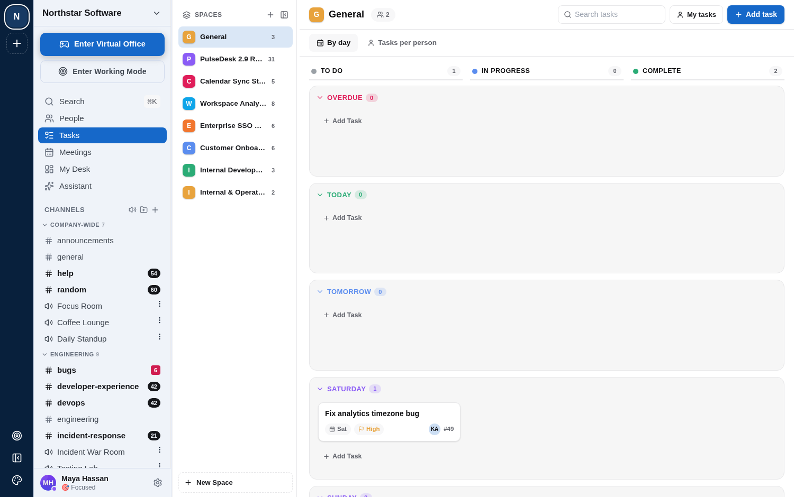

Features / Tasks, with human numbers

Tasks, with human numbers
WebTasks are #42, not a UUID — a per-workspace running number, so "take a look at 42" means something in chat.
- A day-banded board: Overdue, then Today, then every day forward — infinite scroll, no clutter from past days that are already done.
- Assign, prioritise, and due-date a task from a sentence via the AI assistant (see AI Assistant).
- Every status change and reminder is idempotent — nothing gets double-sent if a job retries.
